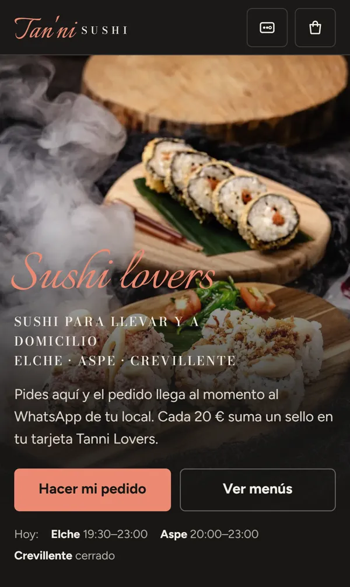
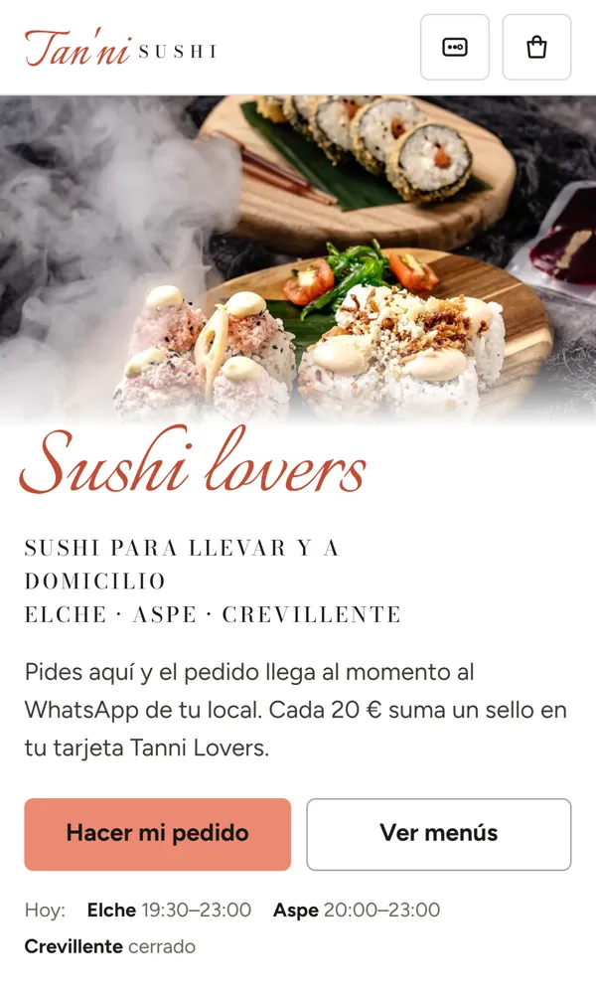
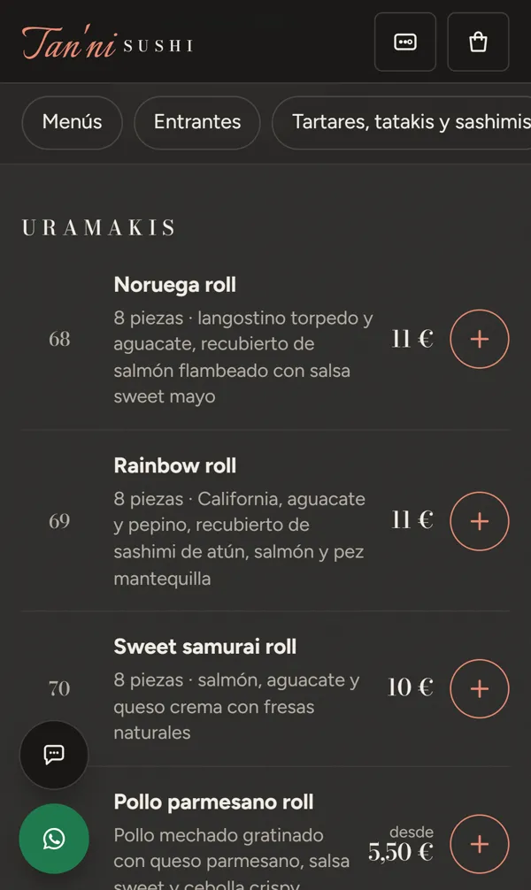
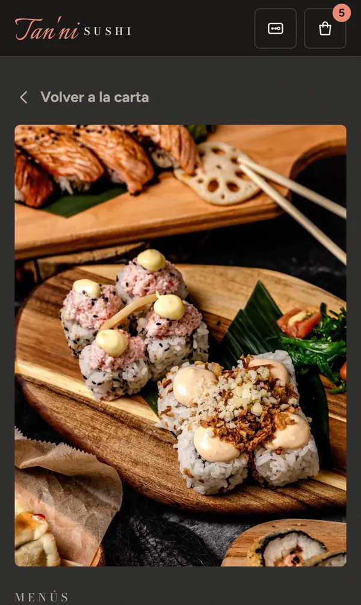
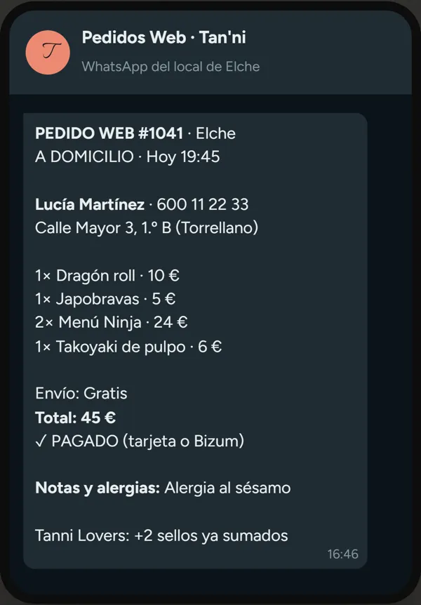
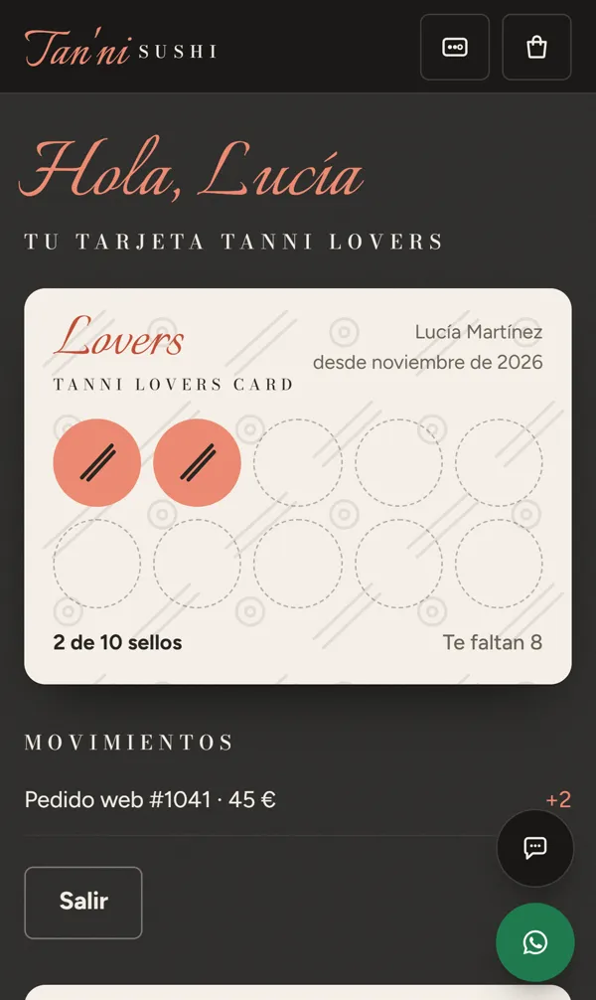

Los pedidos llegan a vuestro WhatsApp, sin comisión por pedido, y la tarjeta Tanni Lovers pasa al móvil.
Para Tan'ni Sushi · Preparada por Jose, Innovarte Agency






| Qué | Precio |
|---|---|
| Eventos y talleres de sushi Página para pedir presupuesto de un evento y reservar plaza en el taller. | 500 € |
| Mensajes a vuestros clientes Avisos de la promo del martes, novedades y menús a quien se haya apuntado. | 400 € |
| Panel de los tres locales Pedidos y ventas por local, platos que más salen e informe semanal al móvil. | 700 € |
| Anuncios en Instagram, Facebook y Google Para que vuestros clientes pidan en la web y no en las plataformas. El dinero de los anuncios va aparte y lo pagáis directamente. | 400 € + 150 €/mes |
| Vídeos animados para redes Por ejemplo, «pide en la web y suma sellos». | Según el vídeo |
| Lo que os proponemos ahora | Pago único |
|---|---|
| Web nueva para los tres locales, pedidos al WhatsApp, tarjeta Tanni Lovers digital, carta con alérgenos y sistema de reseñas | 1.200 € |
| Las tres fichas de Google ordenadas | 200 € |
| Total | 1.400 € |
Precios sin IVA.
Ya en marcha El branding y el logo nuevos los está preparando nuestro equipo de diseño. La web saldrá ya con ellos.